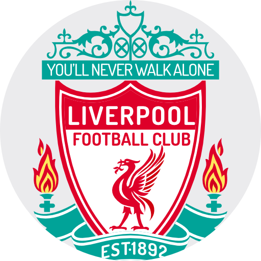
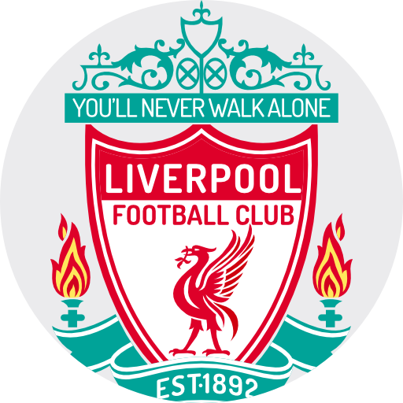

MOHAMED SALAH
Edad: 31 años
Posicion: Delantero
Numero: 11
Estatura: 1.75 m
Peso: 73 kg
Fech. Nac.: 15/06/1992
Información:
Mohamed Salah Hamed Mahrous Ghaly es un futbolista egipcio que juega como extremo en el Liverpool F. C. de la Premier League. En 2013 fue galardonado con el premio SAFP Golden Player por ser el mejor jugador de la Superliga de Suiza.
 

DARWIN NUÑEZ
Edad: 24 años
Posicion: Delantero
Numero: 9
Estatura: 1.87 m
Peso: 81 kg
Fech. Nac.: 24/06/1999
Información:
Darwin Gabriel Núñez Ribeiro, conocido como Darwin Núñez o simplemente Darwin, es un futbolista uruguayo que juega como delantero en el Liverpool F. C. de la Premier League de Inglaterra. Es internacional absoluto con la selección uruguaya.

LUIS DIAZ
Edad: 27 años
Posicion: Delantero
Numero: 7
Estatura: 1.78 m
Peso: 65 kg
Fech. Nac.: 13/01/1997
Información:
Luis Fernando Díaz Marulanda es un futbolista colombiano que juega como extremo izquierdo en el Liverpool F. C. de la Premier League. Es Internacional absoluto con la selección Colombia.